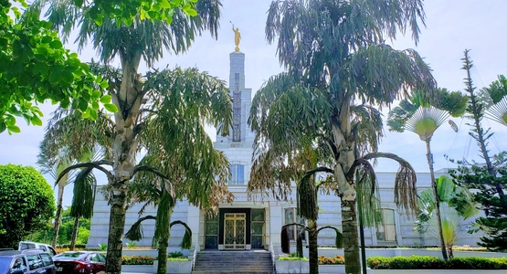
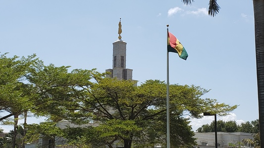
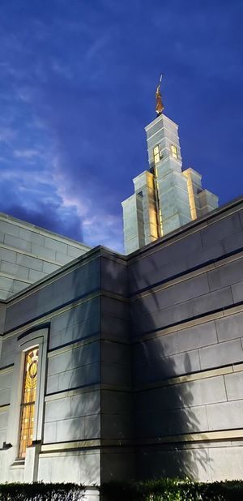
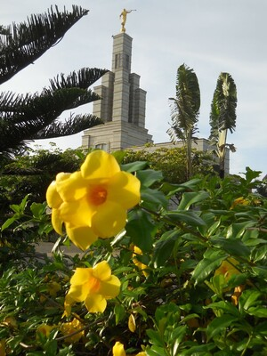
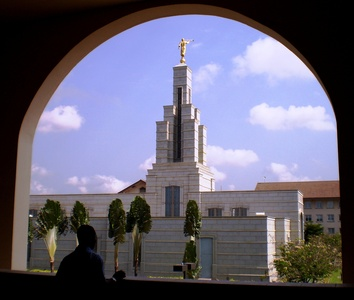
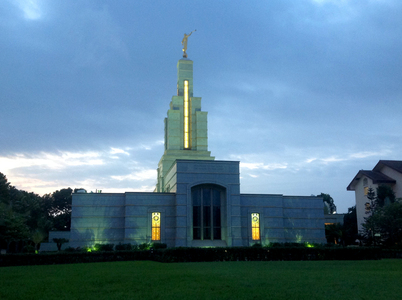
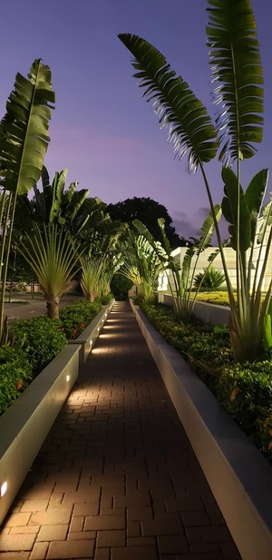
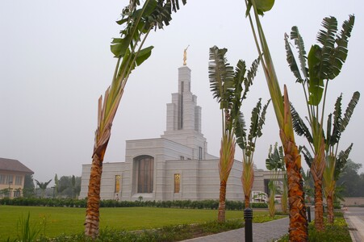

Temples Album
Home
Old
New
Large
Small
Home

Temple and Walkway

Temple and Ghanaian Flag

Temple Side View

Flower and Temple

Dome Window and Temple

Temple View Evening

Temple Walkway

Accra Temple
Temple at Day